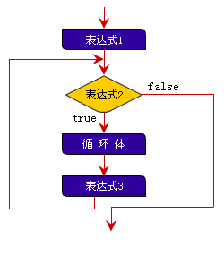

1. Javascript简要基础¶
1.1. 基本概念¶
脚本是一种编程语言，不同于普通文档（如XML），脚本主要由一系列的 数据 和对数据的 操作 （语句）构成。
脚本中语句是一条接着一条顺序执行下去的。如:
a = 1; //让对象a的值为1 （赋值）
b = a; //让b的值为a的值，此后b的值也为1
a = 2; //让a的值为2，此后a为2，b仍然为1
c = a; //让c的值为a的值，此后a为2，b为1，c为2
以上脚本有4条语句，顺序执行。
XML文档描述“ 做什么 ”，脚本描述“ 怎么做 ”。
霸业的脚本系统采用javascript语言, 本教程仅讲一些最基本的javascript脚本知识，欲了解更全面，请参考相关资料。
1.2. 注释¶
注释的内容是为了帮助程序员阅读用的，代码执行时注释会被忽略。
// 标记单行注释开始，每一行的 // 开始到行末的内容为注释。
/* 和 */ 对，用于标记多行注释，如:
/*
这是注释
这也是注释
*/
1.4. 赋值¶
最基础的动作语句是赋值，赋值就是让一个 名字 关联一个 值 , 其后，我们就可以在需要用到这个 值 的地方使用这个 名字 来代替。
基本语法：
变量名称=值;
示例:
/*
简单赋值语句
让 a 关联值 1，分号指示语句结束
javascript里面分号是可选的，但为避免歧义，最好每条语句都加上分号
*/
var a = 1; // var 定义并赋值，首次使用时加上var
a = a + 2; // 重新赋值, 此后a的值是3
没接触过编程语言的朋友一定要注意: 程序里面的 = 符号代表的是一个动作，区别于我们数学里面学的 = 代表一个相等关系 .
1.5. 条件判断¶
有时候程序需要根据不同的条件执行不同的代码，Javasctipt 用 if 来进行条件判断。
示例:
var a = 1;
var b = 2;
if (a > b) {
// 如果 a > b
console.log("a > b");
}
示例2:
var a = 1;
if (a > b) {
// 如果 a > b
// console.log语句通常用于调试，它将字符串输出到控制台。
console.log("a > b");
} else if (a == 1) {
console.log("a = 1");
} else if (a == 0) {
console.log("a = 2");
} else {
// 其它情况
console.log("其它情况");
}
1.6. 遍历数据¶
有时候我们需要遍历一个集合里面的每一个元素做操作，比如霸业里面找出符合某种条件的人物。
我们通常使用 for 循环来实现遍历数据，示例:
var numbers = [1, 3, 2, 4];
for (var i = 0; i < numbers.length; i++) {
if (numbers[i] < 3) {
console.log(numbers[i]);
}
}
for 循环语法构成如下:
for (表达式1; 表达式2; 表达式3) {
循环体
}
其它语句
执行流程：
1.7. 函数（function）¶
如果一段代码是可复用的或是逻辑相对独立，我们可以将其封装称为函数。
基本语法:
function 函数名称(参数列表){
函数体
}
函数名称可以忽略，称为匿名函数。
// 这种格式是普通的赋值语句， “=”右边的的函数整体是一个值。
变量名称 = function(参数列表) {
函数体
}
示例:
function add(x, y) {
return x + y;
}
var a = add(1, 2); // now, c = 3
var b = add(a, 1);
或:
var add = function(x, y) {
return x + y;
}
var a = add(1, 2); // now, c = 3
var b = add(a, 1);